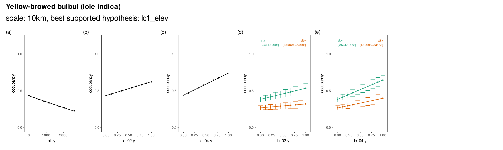

Section 8 Results: Occupancy predictors
8.1 Prepare libraries
8.2 Prepare data to load
# list excel files
data_files <- list.files(path = "data/results/results_model_est_2.5km/",
include.dirs = FALSE,
pattern = "Est", full.names = TRUE)
# get model names
model_names <- map_chr(data_files, function(x){
# split on /
str_split(x, "/") %>%
unlist() %>%
last() %>%
# split on extension
str_split(".xlsx") %>%
unlist() %>%
first()
})8.3 Load data
# load for one
data_files <- data_files[[1]]
model_data <- data_files %>%
excel_sheets() %>%
set_names() %>%
map(read_excel, path = data_files)
# rename model data components and separate predictors
names <- c("predictor", "coefficient", "se", "ci_lower", "ci_higher", "z_value", "p_value")
# map process over all models
model_data <- map(model_data, function(df){
colnames(df) <- names
df <- separate_interaction_terms(df)
return(df)
})8.4 Prepare interaction data
Refer to the function code/fun_make_resp_data.r.
8.5 Plot interaction data
fig_list <- map2(model_data, names(model_data), function(df, species){
# now go over the predictor - modulator combos
subplots <- pmap(df[,c("predictor","modulator","data")],
function(predictor, modulator, data){
# make the actual ggplot here
fig_subplot <- ggplot(data)+
geom_pointrange(aes(seq_x, mean,
ymin = mean-ci,
ymax = mean+ci,
col = factor(m_group)),
shape = 16, size = 0.2)+
geom_smooth(aes(seq_x, mean,
col = factor(m_group)),
method = "glm",
size = 0.3,
se = F)+
scale_colour_manual(values = c("black", "black"))+
scale_y_continuous(breaks = c(0,0.5,1))+
coord_fixed(xlim=c(0,1),ylim = c(0,1.2))+
theme_test(base_size = 6)+
theme(legend.position = "none",
plot.background = element_rect(colour = "grey"),
legend.key = element_blank(),
legend.title = element_text(size = 6),
legend.text = element_text(size = 6))+
labs(x = glue::glue('{predictor}'),
y = "occupancy")
# if there is a modulator
if(!is.na(modulator)){
label_data <- group_by(data, m_group) %>%
summarise(label_y = mean(mean)) %>%
mutate(label_x = seq(0, 1, length.out = length(label_y)))
fig_subplot <- fig_subplot+
geom_text(data = label_data,
aes(x = label_x, y = 1.2,
label = glue::glue('{modulator}\n{m_group}'),
col = factor(m_group)),
hjust = "inward",
vjust = "inward",
size = 1.5)+
# overwrite palette
scale_colour_brewer(palette = "Set1")
}
return(fig_subplot)
})
subplots <- patchwork::wrap_plots(subplots, ncol = 6)+
patchwork::plot_annotation(
title = species,
tag_levels = "a",
tag_prefix = "(", tag_suffix = ")",
theme = theme(plot.title = element_text(size = 8,face = "italic")))
})8.6 Show example interaction
library(magick)
fig_interaction = image_read_pdf("figs/fig_interaction_clim_elev.pdf", pages = 31)
fig_interaction